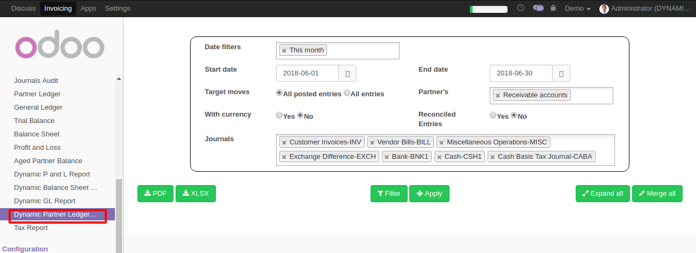
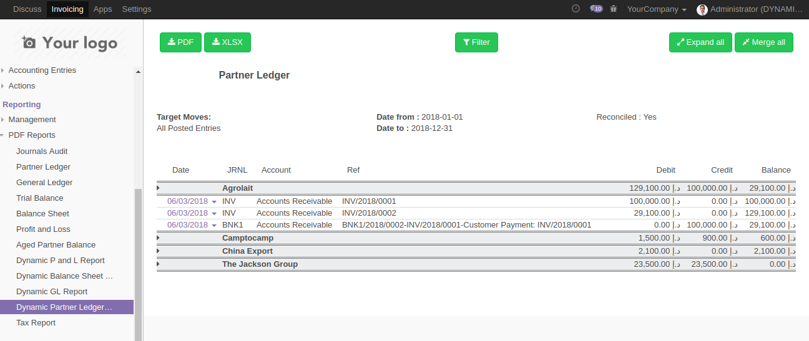
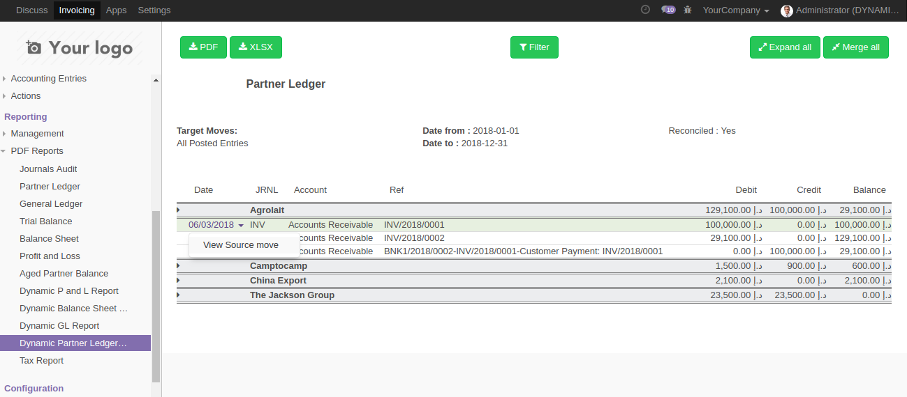
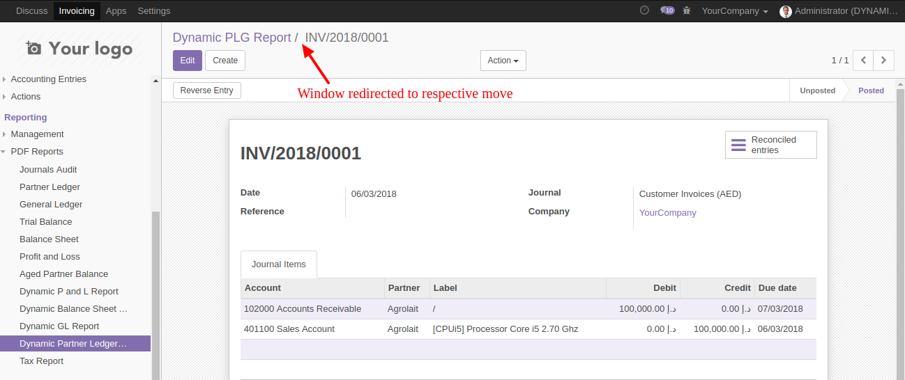
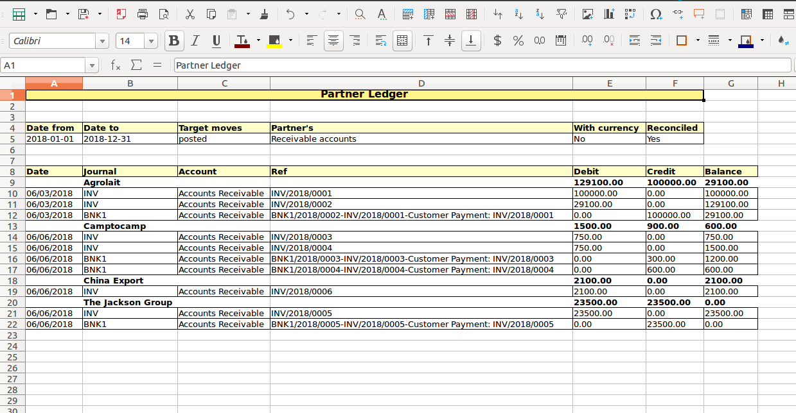
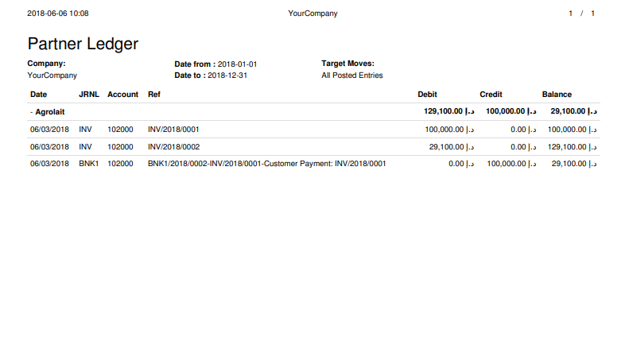

Dynamic Partner Ledger Report with drill down - Community Edition
Do you want to show Partner Ledger report in screen and inspect it? don't worry here we provide a plugin with easy option to show Partner Ledger Report on the screen to analyze without download into system.
You have an interactive filter pannel as well as result screen with much more options.
Also can download report into Pdf as well as Xlsx report.
Interactive filter pannel
Report welcomes you with a very beautiful filter section

After selecting appropriate filter, press 'Apply' button to get details of Partner ledger.
Here you can get details of each row by clicking.

Redirect to origin move by clicking on each lines date fields.


Download report in Pdf and Xlsx formats.


We have similar reports for General Ledger and Balance Sheet. Please check it out